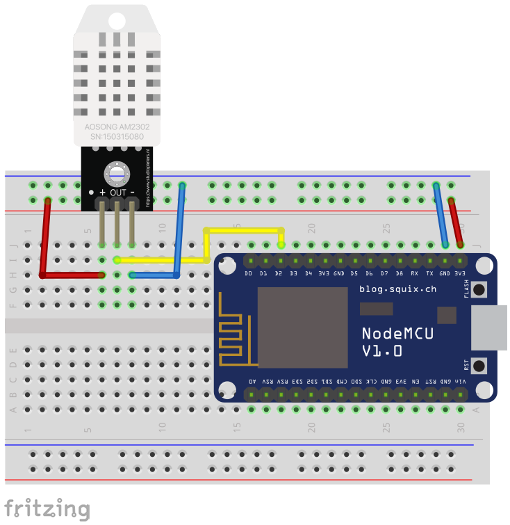

Montagem do hardware para medir temperatura e umidade
| Componente | Descrição | Quantidade |
|---|---|---|
 |
Placa NodeMCU | 1 |
| Módulo DHT22 | 1 | |
| Cabos de Conexão (Jumper) | 5 | |
| Protoboard | 1 |
Optamos pela utilização da placa NodeMCU por ela fazer a comunicação com a internet e permitir enviar os dados ao ThingSpeak. Na falta deste recurso, é possível substituir pela Arduino com uma Wifi Shield, porém, sua montagem e programação é diferente.
A placa NodeMCU possui os pinos para conexão demonstrados na Figura 1, no entanto, para este projeto será utilizado somente os pinos: 3.3V, GND e GPIO4 (D2).
Figura 1. Pinos para conexão da placa NodeMCU Fonte: link
O módulo Wifi ESP8266 NodeMCU é uma placa de desenvolvimento que combina o chip ESP8266, uma interface usb-serial e um regulador de tensão 3.3V. Ela pode ser programada com Python, LUA e a IDE do Arduino com C++. Será utilizada aqui a IDE do Arduino. O NodeMCU possui antena embutida e conector micro-usb para conexão ao computador, além de 11 pinos de I/O e conversor analógico-digital. Veja na Figura 2 as especificações da placa. Figura 2. Especificações do módulo Wifi ESP8266 NodeMCU
Figura 2. Especificações do módulo Wifi ESP8266 NodeMCU
O sensor DHT22 - AM2302 permite medir temperaturas de - 40 a 80º Celsius, e umidade na faixa de 0 a 100 %. Sua faixa de precisão para temperatura é de 0,1 graus, e para umidade é de 0,1%. Figura 3. Especificações do módulo do sensor DHT22
Figura 4. Pinagem DHT22
Para montar o hardware será preciso realizar as seguintes conexões:
- Conecte a porta GND do NodeMCU na conexão negativa da protoboard;
- Conecte a porta 3V3 do NodeMCU na conexão positiva da protoboard;
- Conecte a porta digital do NodeMCU no pino central (out) do módulo DHT22;
- Conecte a porta positiva do módulo DHT22 na conexão positiva da protoboard;
- Conecte a porta negativa do módulo DHT22 na conexão negativa da protoboard.
 Figura 5. Ilustração da montagem do hardware com as suas conexões